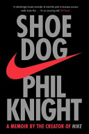

Books
I love to read but I haven't been able to find much time to since coming to college, but I'm trying to change that.
This year I'm doing a challenge where I try to read 25 books.
Some of my favorite books from last year:



The books I read so far this year:
- Why we Sleep by Matthew Walker An intersting read that makes me reevaluate the importance of sleep through a scientfic lens
Here are the next one's I plan to read:
- Logical Chess by Irving Chernev
- Save the Cat by Blake Snyder
- The Code Book by Simon Singh
- The Goldfinch by Donna Tartt
- Watership Down by Richard Adams
- Bad Blood by John Carreyrou
- Liar's Poker by Michael Lewis
- Becoming by Michelle Obama
Feel free to leave any suggestions down below: